Trois parties publiques — accueil, vitrine, boutique — et un espace administrateur volontairement limité au fond : textes, photos, produits et posts. Jamais la mise en page.
Tapissière-garnisseuse. Je restaure fauteuils, canapés et chaises dans les règles du métier, et je couds rideaux, coussins et abat-jour sur mesure.
Formée à la tapisserie d'ameublement traditionnelle et contemporaine, j'accompagne chaque pièce du dégarnissage à la finition : sanglage, guindage, garniture, couture. Le choix du tissu se fait ensemble, à l'atelier ou au showroom.
En savoir plus sur l'atelierFauteuils, canapés et chaises restaurés selon les techniques traditionnelles et contemporaines.
Rideaux, stores, coussins et housses sur mesure.
Formes classiques ou dessinées pour l'occasion, montées à la main.
Avant / après, récit du projet, tissus employés. Sur devis, pas de vente en ligne.
Voir les réalisationsAbat-jour, lampes, rideaux et coussins prêts à partir, en vente directe.
Acheter en ligne
L'Atelier du Bout d'à HautRénover plutôt que remplacer : chaque siège remis en état est un meuble qui ne part pas à la déchetterie.
Réalisations effectuées pour des clients qui souhaitaient rénover et embellir leurs biens.
Retrouvée dans un grenier de l'Eure-et-Loir, la carcasse était saine. Tout le reste était à refaire.
Le dégarnissage a demandé deux jours. Sous la toile, le crin animal était encore bon : lavé, cardé, il a repris sa place. Les ressorts ont été changés, le sanglage entièrement remplacé par des sangles de jute.
Pour le tissu, la propriétaire hésitait entre un lin écru et ce velours. Nous avons posé les deux échantillons sur le bois nu, à la lumière du salon : le vert de gris a gagné sans discussion.
La finition est faite au clou de tapissier, posé à la main sur galon. Le fauteuil est reparti chez elle en mars, pour au moins trente ans.
Envoyez-moi des photos et vos dimensions, je vous réponds avec une estimation.
Abat-jour ou coussins dans votre tissu : passez par la page contact.
Monté à la main sur carcasse laiton, doublure blanche pour une lumière chaude. Lin belge non traité, couture rentrée. Diamètre 25 cm, hauteur 18 cm.
Gratuit à Rambouillet. À choisir à l'étape suivante.
Vous gérez le contenu du site. La mise en page et les couleurs sont fixées par la charte : rien à régler de ce côté.
Photos, titre, prix, description, stock. Mis en ligne immédiatement.
Nouveau produitPhotos avant / après, titre et récit du projet. Pas de prix.
Nouveau postVous pouvez créer, renommer, réordonner ou masquer autant de catégories et de filtres que vous voulez. La boutique et la vitrine les affichent automatiquement dans la mise en page existante.
Tapissière-garnisseuse. Restauration de fauteuils, couture d'ameublement, abat-jour sur mesure.
Monté à la main sur carcasse laiton, doublure blanche. Lin belge non traité. Ø 25 cm, h. 18 cm.